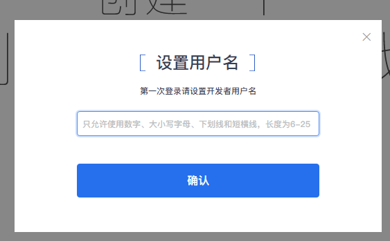

Introduction
产品介绍
开通游种圈子Pro账号需要准备的材料
注册各运营平台账号前需要准备的材料
微信平台有两种情况
1.微信(有公众号)
1.1登录公众号进入微信公众平台后台
1.2填写小程序信息
1.3等待审核
1.4登录游种圈子Pro建立游戏的私域圈
1.5创建游戏圈填写基本信息
1.6授权管理
1.7配置完成后提交（部署中）
1.8提交审核（有第二次审核，周期大概7天，具体以腾讯审核为准）
1.9完成审核体验小程序
2.微信（没有公众号）
2.1注册微信小程序
2.2激活小程序
2.3填写主体信息
2.4管理员信息登记
2.5登录游种圈子Pro建立游戏的私域圈
2.6创建游戏圈填写基本信息
2.7授权管理
2.8配置完成后提交（部署中）
2.9提交审核（有第二次审核，周期大概7天，具体以腾讯审核为准）
2.10完成审核体验小程序
3.QQ
3.1注册QQ开放平台小程序后台
3.2激活小程序
3.3填写主体信息
3.4填写公司信息
3.5管理员信息登记
3.6主体信息验证
3.7等待审核（一般审核期为1-2天左右）
3.8登录游种圈子Pro
3.9创建游戏圈填写基本信息
3.10授权管理
3.11配置完成后提交，剩下的小程序部署工作由游种完成
3.12提交审核
3.13审核通过
4.头条
4.1注册头条公众平台小程序后台
4.2点击进入开发者平台
4.3申请创建（小程序）
4.4等待审核（一般审核期为2-3天左右）
4.5审核通过
4.6填写小程序基本信息
4.7填写小程序资质信息与管理员信息登记
4.8选择该小程序点击协作
4.9登录游种圈子Pro
4.10创建游戏圈填写基本信息
4.11授权管理
4.12配置完成后提交（部署中）
4.13等待通知提审小程序
4.14发布小程序
头条号绑定小程序
Published with GitBook
4.2点击进入开发者平台
4.2点击进入开发者平台
设置用户名（用户名唯一）

results matching "
"
No results matching "
"